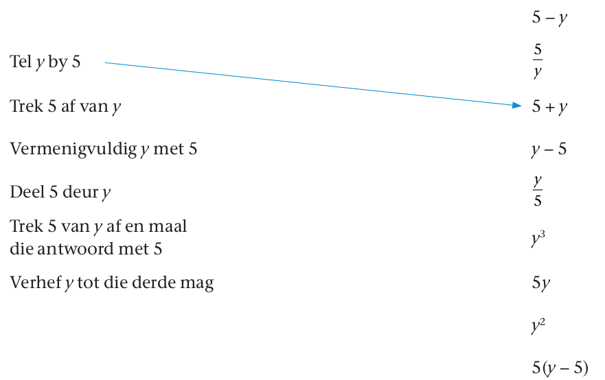
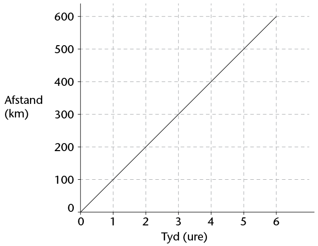

<div class="container">
  <div id="contents" class="col-md-12 main-content"><h1 xmlns="http://www.w3.org/1999/xhtml" lang="en-US" id="toc-id-32">Hersiening</h1>

    <p xmlns="http://www.w3.org/1999/xhtml" class="Body-no-indent" lang="en-US">Wys al
    die stappe van jou werk.</p>


    <h3 xmlns="http://www.w3.org/1999/xhtml" class="Head-investigation" lang="en-US">Numeriese en meetkundige patrone</h3>

    <p xmlns="http://www.w3.org/1999/xhtml" class="Body-investigation-hanging para-style-override-3" lang="en-US">1.	Vir elk van die volgende rye,
    (i) beskryf die verband tussen die terme in die ry in woorde,
    en (ii) gebruik die verband om die volgende 3 terme in die ry
    te bepaal.</p>

    <p xmlns="http://www.w3.org/1999/xhtml" class="ques-a-" lang="en-US">(a)	23; 19;
    15; ...</p>

<hr xmlns="http://www.w3.org/1999/xhtml"/>
<p xmlns="http://www.w3.org/1999/xhtml" class="ques-a-" lang="en-US">(b)	0,1; 0,2;
    0,4; 0,8; ...</p>

<hr xmlns="http://www.w3.org/1999/xhtml"/>
<p xmlns="http://www.w3.org/1999/xhtml" class="ques-a-" lang="en-US">
    (c) \(\frac{1}{2}; \frac{3}{2}; 2\frac{1}{2} \) ...</p>

    <hr xmlns="http://www.w3.org/1999/xhtml"/>
<p xmlns="http://www.w3.org/1999/xhtml" class="ques-a-" lang="en-US">(d)	1; 4; 9;
    16; ...</p>

<hr xmlns="http://www.w3.org/1999/xhtml"/>
<p xmlns="http://www.w3.org/1999/xhtml" class="ques-a-" lang="en-US">(e)	2; 4; 7;
    11; ...</p>

<hr xmlns="http://www.w3.org/1999/xhtml"/>
<p xmlns="http://www.w3.org/1999/xhtml" class="ques-a-" lang="en-US">(f)	2; 9; 28;
    65; ...</p>

<hr xmlns="http://www.w3.org/1999/xhtml"/>
<p xmlns="http://www.w3.org/1999/xhtml" class="ques-a-" lang="en-US">(g)	21 200; 2
    120; 212; ...</p>

<hr xmlns="http://www.w3.org/1999/xhtml"/>
<p xmlns="http://www.w3.org/1999/xhtml" class="Body-investigation" lang="en-US">
    2.	Skryf die eerste drie terme van ’n ry neer wat voldoen aan
    die gegewe beskrywing:</p>

    <p xmlns="http://www.w3.org/1999/xhtml" class="ques-a-" lang="en-US">(a)	Elke term
    is 2,3 groter as die vorige term.</p>

    <hr xmlns="http://www.w3.org/1999/xhtml"/>
<p xmlns="http://www.w3.org/1999/xhtml" class="ques-a-" lang="en-US">(b)	Elke term
    is \(\frac{1}{3} \) kleiner as die volgende term.</p>

    <hr xmlns="http://www.w3.org/1999/xhtml"/>
<p xmlns="http://www.w3.org/1999/xhtml" class="ques-a-" lang="en-US">(c)	Elke term
    is die helfte van die vorige term.</p>

<hr xmlns="http://www.w3.org/1999/xhtml"/>
<p xmlns="http://www.w3.org/1999/xhtml" class="ques-a-" lang="en-US">3.	(a)	Skryf
    die waardes van \(a\)
    tot \(d\)  neer:</p>

    <table xmlns="http://www.w3.org/1999/xhtml" id="table-69" class="No-Table-Style"><colgroup><col class="Row-Column-357"/><col class="Row-Column-101"/><col class="Row-Column-101"/><col class="Row-Column-101"/><col class="Row-Column-101"/><col class="Row-Column-101"/><col class="Row-Column-101"/></colgroup><tbody><tr class="Row-Column-75"><td class="cell-style-override-3">
            <p class="Table-text-left">Termnommer</p>
          </td>

          <td class="cell-style-override-3">
            <p class="Table-text-centred">1</p>
          </td>

          <td class="cell-style-override-3">
            <p class="Table-text-centred">2</p>
          </td>

          <td class="cell-style-override-3">
            <p class="Table-text-centred">3</p>
          </td>

          <td class="cell-style-override-3">
            <p class="Table-text-centred">4</p>
          </td>

          <td class="cell-style-override-3">
            <p class="Table-text-centred">5</p>
          </td>

          <td class="cell-style-override-3">
            <p class="Table-text-centred">10</p>
          </td>
        </tr><tr class="Row-Column-75"><td class="cell-style-override-3">
            <p class="Table-text-left">Waarde van die term</p>
          </td>

          <td class="cell-style-override-3">
            <p class="Table-text-centred">7,2</p>
          </td>

          <td class="cell-style-override-3">
            <p class="Table-text-centred">7,7</p>
          </td>

          <td class="cell-style-override-3">
            <p class="Table-text-centred">8,2</p>
          </td>

          <td class="cell-style-override-3">
            <p class="Table-text-centred para-style-override-15">
            \(a\)</p>
          </td>

          <td class="cell-style-override-3">
            <p class="Table-text-centred">9,2</p>
          </td>

          <td class="cell-style-override-3">
            <p class="Table-text-centred para-style-override-15">
            \(b\)</p>
          </td>
        </tr></tbody></table><hr xmlns="http://www.w3.org/1999/xhtml"/>
<table xmlns="http://www.w3.org/1999/xhtml" id="table-70" class="No-Table-Style"><colgroup><col class="Row-Column-357"/><col class="Row-Column-101"/><col class="Row-Column-101"/><col class="Row-Column-101"/><col class="Row-Column-101"/><col class="Row-Column-101"/><col class="Row-Column-101"/></colgroup><tbody><tr class="Row-Column-75"><td class="cell-style-override-3">
            <p class="Table-text-left">Termnommer</p>
          </td>

          <td class="cell-style-override-3">
            <p class="Table-text-centred">1</p>
          </td>

          <td class="cell-style-override-3">
            <p class="Table-text-centred">2</p>
          </td>

          <td class="cell-style-override-3">
            <p class="Table-text-centred">3</p>
          </td>

          <td class="cell-style-override-3">
            <p class="Table-text-centred para-style-override-15">
            \(c\)</p>
          </td>

          <td class="cell-style-override-3">
            <p class="Table-text-centred para-style-override-15">
            \(d\)</p>
          </td>

          <td class="cell-style-override-3">
            <p class="Table-text-centred">7</p>
          </td>
        </tr><tr class="Row-Column-75"><td class="cell-style-override-3">
            <p class="Table-text-left">Waarde van die term</p>
          </td>

          <td class="cell-style-override-3">
            <p class="Table-text-centred">1</p>
          </td>

          <td class="cell-style-override-3">
            <p class="Table-text-centred">3</p>
          </td>

          <td class="cell-style-override-3">
            <p class="Table-text-centred">9</p>
          </td>

          <td class="cell-style-override-3">
            <p class="Table-text-centred">81</p>
          </td>

          <td class="cell-style-override-3">
            <p class="Table-text-centred">243</p>
          </td>

          <td class="cell-style-override-3">
            <p class="Table-text-centred">729</p>
          </td>
        </tr></tbody></table><hr xmlns="http://www.w3.org/1999/xhtml"/>
<p xmlns="http://www.w3.org/1999/xhtml" class="ques-a-" lang="en-US">
    (b)	Verduidelik hoe jy die waardes van \(b\)  en \(d\)  hier bo bepaal het.</p>

<hr xmlns="http://www.w3.org/1999/xhtml"/>
<p xmlns="http://www.w3.org/1999/xhtml" class="Body-investigation" lang="en-US">
    4.	Die diagram hier onder wys ’n reeks patrone wat uit
    vuurhoutjies geskep is.</p>

    <p xmlns="http://www.w3.org/1999/xhtml" class="Body-investigation para-style-override-20" lang="en-US"> </p>

    <p xmlns="http://www.w3.org/1999/xhtml" class="ques-a-" lang="en-US">(a)	Voltooi
    die tabel:</p>

    <table xmlns="http://www.w3.org/1999/xhtml" id="table-71" class="No-Table-Style"><colgroup><col class="Row-Column-359"/><col class="Row-Column-54"/><col class="Row-Column-54"/><col class="Row-Column-54"/><col class="Row-Column-54"/><col class="Row-Column-54"/><col class="Row-Column-54"/></colgroup><tbody><tr class="Row-Column-75"><td class="cell-style-override-3">
            <p class="Table-text-left">Patroonnommer</p>
          </td>

          <td class="cell-style-override-3">
            <p class="Table-text-centred">1</p>
          </td>

          <td class="cell-style-override-3">
            <p class="Table-text-centred">2</p>
          </td>

          <td class="cell-style-override-3">
            <p class="Table-text-centred">3</p>
          </td>

          <td class="cell-style-override-3">
            <p class="Table-text-centred">4</p>
          </td>

          <td class="cell-style-override-3">
            <p class="Table-text-centred">15</p>
          </td>

          <td class="cell-style-override-3">
            </td>
        </tr><tr class="Row-Column-75"><td class="cell-style-override-3">
            <p class="Table-text-left">Getal vuurhoutjies
            benodig</p>
          </td>

          <td class="cell-style-override-3">
            <p class="Table-text-centred">3</p>
          </td>

          <td class="cell-style-override-3">
            <p class="Table-text-centred">5</p>
          </td>

          <td class="cell-style-override-3">
            </td>

          <td class="cell-style-override-3">
            </td>

          <td class="cell-style-override-3">
            </td>

          <td class="cell-style-override-3">
            <p class="Table-text-centred">121</p>
          </td>
        </tr></tbody></table><p xmlns="http://www.w3.org/1999/xhtml" class="ques-a-" lang="en-US">(b)	Skryf die
    reël wat die getal vuurhoutjies sal gee wat nodig is vir elke
    nuwe
    patroon, in woorde neer.</p>

    <hr xmlns="http://www.w3.org/1999/xhtml"/>
<h3 xmlns="http://www.w3.org/1999/xhtml" class="Head-investigation" lang="en-US">Funksies en verbande</h3>

    <p xmlns="http://www.w3.org/1999/xhtml" class="Body-investigation" lang="en-US">
    1.	Gebruik die formule vir die oppervlakte van ’n reghoek
    (\(A  = l  \times b\) ) om die volgende
    te bereken:</p>

    <p xmlns="http://www.w3.org/1999/xhtml" class="ques-a-" lang="en-US">(a)	Die
    oppervlakte, as die lengte 0,4 m is en die breedte 0,3 m is</p>

<hr xmlns="http://www.w3.org/1999/xhtml"/>
<p xmlns="http://www.w3.org/1999/xhtml" class="ques-a-" lang="en-US">(b)	Die
    lengte, as die oppervlakte 12,4 cm<sup>2</sup>  is en die breedte 4 cm is</p>

<hr xmlns="http://www.w3.org/1999/xhtml"/>
<p xmlns="http://www.w3.org/1999/xhtml" class="ques-a-" lang="en-US">(c)	Die
    breedte, as die oppervlakte 14,4 m<sup>2</sup>  is en die lengte 12 m is</p>

<hr xmlns="http://www.w3.org/1999/xhtml"/>
<p xmlns="http://www.w3.org/1999/xhtml" class="Body-investigation-hanging">2.	Die formule om die
    totale buite-oppervlakte van
    ’n silinder met radius van die basis \(r\)  en hoogte \(h\)
    te bereken is: \(A  = 2 \pi r ^2 + 2 \pi rh\)</p>

    <div xmlns="http://www.w3.org/1999/xhtml" class="aside">
      <p class="Body-box-no-indent para-style-override-2" lang="en-US"><span class="char-style-override-9">\(\pi\)</span>  of pi (uitgespreek “paai”)
      is ’n getal wat ongeveer gelyk is aan \(\frac{22}{7}\).</p>

      <p class="Body-box-no-indent" lang="en-US">
      Jy sal in graad 8 meer oor pi leer.</p>
    </div>

    <p xmlns="http://www.w3.org/1999/xhtml" class="Body-investigation">Gebruik die formule om die
    buite-oppervlakte te
    bereken as <span class="char-style-override-32">\(\pi = \frac{22}{7}\), die basis se radius 7 cm en die hoogte
    3 cm is</span>.</p>

    <div xmlns="http://www.w3.org/1999/xhtml" class="frame-13"></div>

<hr xmlns="http://www.w3.org/1999/xhtml"/>
<p xmlns="http://www.w3.org/1999/xhtml" class="Body-investigation-hanging" lang="en-US">3.	Die formule om die temperatuur in grade Celsius (°C)
    te bepaal, is \(C = \frac{22}{7} (F- 32)\),
    waar \(F\)  die
    temperatuur in grade Fahrenheit (°F) is. Wat is die temperatuur
    in °C as
    dit 59 °F is?</p>

<hr xmlns="http://www.w3.org/1999/xhtml"/>
<h3 xmlns="http://www.w3.org/1999/xhtml" class="Head-investigation" lang="en-US">Algebraïese uitdrukkings</h3>

    <p xmlns="http://www.w3.org/1999/xhtml" class="Body-investigation" lang="en-US">
    1.	As Skumbuzo \(x\)
    jaar oud is, skryf die ouderdom in terme van \(x\)  van die volgende
    mense neer:</p>

    <p xmlns="http://www.w3.org/1999/xhtml" class="ques-a--2-space-below">(a)	Suzie, wat 2 jaar ouer as
    Skumbuzo is</p>

    <hr xmlns="http://www.w3.org/1999/xhtml"/>
<p xmlns="http://www.w3.org/1999/xhtml" class="ques-a--2-space-below">(b)	Mohau, wat 2 jaar ouer as
    Suzie is</p>

    <hr xmlns="http://www.w3.org/1999/xhtml"/>
<p xmlns="http://www.w3.org/1999/xhtml" class="ques-a--2-space-below">(c)	Lintle, wat twee keer so
    oud soos Skumbuzo is</p>

    <hr xmlns="http://www.w3.org/1999/xhtml"/>
<p xmlns="http://www.w3.org/1999/xhtml" class="Body-investigation-hanging" lang="en-US">2.	Die verband tussen ’n meisie se ouderdom
    (\(y\)  jaar oud) en haar
    ma s’n is \(y  +
    27\).
    Hoe oud is die meisie se ma as die meisie 13 jaar oud is?</p>

    <hr xmlns="http://www.w3.org/1999/xhtml"/>
<p xmlns="http://www.w3.org/1999/xhtml" class="Body-investigation-hanging" lang="en-US">3.	Skryf getalle in die blokkies wat die bewerings waar
    sal maak. Al die getalle wat jy invul moet desimale getalle
    wees.</p>
    <p xmlns="http://www.w3.org/1999/xhtml" class="ques-a--2-space-below">(a)  As x = 4,5, dan x + 7,7 = ☐</p>

    <p xmlns="http://www.w3.org/1999/xhtml" class="ques-a--2-space-below">(b)  As x = 2,6, dan 2x =☐</p>

    <p xmlns="http://www.w3.org/1999/xhtml" class="ques-a--2-space-below">(c)  As x = ☐ dan \(\frac{x}{3}\) = ☐</p>

    <hr xmlns="http://www.w3.org/1999/xhtml"/>

<p xmlns="http://www.w3.org/1999/xhtml" class="Body-investigation-spaced para-style-override-3">
    4.	Pas elke rekenvoorskrif by die korrekte uitdrukking. Die
    eerste een is reeds vir jou
    gedoen.</p>
      <div xmlns="http://www.w3.org/1999/xhtml" class="frame-13"></div>

      <h3 xmlns="http://www.w3.org/1999/xhtml" class="Head-investigation" lang="en-US">Algebraïese vergelykings</h3>

    <p xmlns="http://www.w3.org/1999/xhtml" class="Body-investigation" lang="en-US">
    1.	Skryf ’n vergelyking (’n oop getalsin) neer wat by die
    gegewe beskrywing pas:</p>

    <p xmlns="http://www.w3.org/1999/xhtml" class="ques-a-" lang="en-US">(a)	Christian
    is \(x\)  jaar oud, sy
    beste maat Refilwe is \(y\)  jaar oud, en die som van
    hulle
    ouderdomme is 27.</p>

    

    <p xmlns="http://www.w3.org/1999/xhtml" class="ques-a-" lang="en-US">(b)	Motor
    \(a\)  is R5 000
    goedkoper as motor \(b\) .</p>


    <p xmlns="http://www.w3.org/1999/xhtml" class="Body-investigation" lang="en-US">
    2.	Hier is ’n vergelyking: \(3 + c = d\) </p>

    <p xmlns="http://www.w3.org/1999/xhtml" class="ques-a-" lang="en-US">(a)	Skryf ’n
    getallepaar neer wat die vergelyking waar sal maak.</p>

    <hr xmlns="http://www.w3.org/1999/xhtml"/>
<p xmlns="http://www.w3.org/1999/xhtml" class="ques-a-" lang="en-US">(b)	Skryf ’n
    ander getallepaar neer wat ook die vergelyking waar sal maak.
    Jou
    getalle moet gewone breuke wees.</p>

    <hr xmlns="http://www.w3.org/1999/xhtml"/>
<p xmlns="http://www.w3.org/1999/xhtml" class="Body-investigation" lang="en-US">
    3.	Los op vir \(x\) :</p>

      <p xmlns="http://www.w3.org/1999/xhtml" class="ques-a--3-columns para-style-override-5" lang="en-US">(a) \(x - 6 = 15\) </p><hr xmlns="http://www.w3.org/1999/xhtml"/>
<p xmlns="http://www.w3.org/1999/xhtml">(b)  \(3x = 45\) </p><hr xmlns="http://www.w3.org/1999/xhtml"/>
<p xmlns="http://www.w3.org/1999/xhtml">(c)  \(\frac{80}{x} = 4\)</p><hr xmlns="http://www.w3.org/1999/xhtml"/>

    <p xmlns="http://www.w3.org/1999/xhtml" class="Body-investigation" lang="en-US">
    4.	Daar word vir jou gegee dat \(3x  + 5 = 11\). Skryf die waarde
    neer van:</p>
    <p xmlns="http://www.w3.org/1999/xhtml" class="ques-a--2-column" lang="en-US">
    (a) \(  3x +     4  \) </p>    <hr xmlns="http://www.w3.org/1999/xhtml"/>
<p xmlns="http://www.w3.org/1999/xhtml">(b)  \((3x + 5)^2\)</p>

    <hr xmlns="http://www.w3.org/1999/xhtml"/>

    <p xmlns="http://www.w3.org/1999/xhtml" class="Body-investigation" lang="en-US">
    5.	As \(d = c^3 + 12\), bereken die waarde van
    \(d\)  as \(c\)  ’n waarde het van:</p>

    <p xmlns="http://www.w3.org/1999/xhtml" class="ques-a--2-column" lang="en-US">
    (a)	3	(b)	6</p>

    <p xmlns="http://www.w3.org/1999/xhtml" class="ques-a--2-column" lang="en-US">
    (a) 3 </p><hr xmlns="http://www.w3.org/1999/xhtml"/>
    <p xmlns="http://www.w3.org/1999/xhtml">(b)  6</p><hr xmlns="http://www.w3.org/1999/xhtml"/>


    <h3 xmlns="http://www.w3.org/1999/xhtml" class="Head-investigation" lang="en-US">Grafieke</h3>

    <p xmlns="http://www.w3.org/1999/xhtml" class="Body-investigation-hanging" lang="en-US">1.	Bestudeer die volgende grafiek, wat die afstand wat
    afgelê is deur ’n motor op die N1 wys, en beantwoord die vrae
    wat volg:</p>

    <p xmlns="http://www.w3.org/1999/xhtml" class="ques-a-" lang="en-US">
     </p>

    <p xmlns="http://www.w3.org/1999/xhtml" class="ques-a-" lang="en-US">(a)	Ahmed sê,
    “Dit is ’n lineêre grafiek.” Is hy reg? Verduidelik jou
    antwoord.</p>

    <hr xmlns="http://www.w3.org/1999/xhtml"/>
<p xmlns="http://www.w3.org/1999/xhtml" class="ques-a-" lang="en-US">(b)	Sindi sê
    die grafiek is toenemend. Is sy reg? Verduidelik jou
    antwoord.</p>

<hr xmlns="http://www.w3.org/1999/xhtml"/>
<p xmlns="http://www.w3.org/1999/xhtml" class="ques-a-" lang="en-US">(c)	Hoe ver
    het die motor na 1,5 uur gery?</p>

    <hr xmlns="http://www.w3.org/1999/xhtml"/>
<p xmlns="http://www.w3.org/1999/xhtml" class="ques-a-" lang="en-US">(d)	Voltooi
    die volgende tabel deur die waardes van die grafiek af te
    lees:</p>

    <table xmlns="http://www.w3.org/1999/xhtml" id="table-73" class="No-Table-Style"><colgroup><col class="Row-Column-29"/><col class="Row-Column-376"/><col class="Row-Column-376"/><col class="Row-Column-376"/><col class="Row-Column-376"/><col class="Row-Column-376"/><col class="Row-Column-376"/></colgroup><tbody><tr class="Row-Column-31"><td class="cell-style-override-3">
            <p class="Table-text-left">Tyd (uur)</p>
          </td>

          <td class="cell-style-override-3">
            <p class="Table-text-centred">1</p>
          </td>

          <td class="cell-style-override-3">
            <p class="Table-text-centred">2</p>
          </td>

          <td class="cell-style-override-3">
            <p class="Table-text-centred">3</p>
          </td>

          <td class="cell-style-override-3">
            <p class="Table-text-centred">4</p>
          </td>

          <td class="cell-style-override-3">
            <p class="Table-text-centred">5</p>
          </td>

          <td class="cell-style-override-3">
            <p class="Table-text-centred">6</p>
          </td>
        </tr><tr class="Row-Column-31"><td class="cell-style-override-3">
            <p class="Table-text-left">Afstand (km)</p>
          </td>

          <td class="cell-style-override-3">
            </td>

          <td class="cell-style-override-3">
            </td>

          <td class="cell-style-override-3">
            </td>

          <td class="cell-style-override-3">
            </td>

          <td class="cell-style-override-3">
            </td>

          <td class="cell-style-override-3">
            </td>
        </tr></tbody></table><p xmlns="http://www.w3.org/1999/xhtml" class="ques-a-" lang="en-US">(e)	As die
    motor op dieselfde manier aanhou ry soos wat op die grafiek
    gewys word,
    hoe ver sou dit na 10 uur gery het?</p>

<hr xmlns="http://www.w3.org/1999/xhtml"/>
<p xmlns="http://www.w3.org/1999/xhtml" class="Body-investigation-hanging" lang="en-US">2.	Bestudeer die volgende grafiek, wat die gemiddelde
    temperatuur in Kaapstad wys,
    en beantwoord dan die vrae wat volg:</p>

    <p xmlns="http://www.w3.org/1999/xhtml" class="Body-investigation-hanging" lang="en-US"> </p>

    <p xmlns="http://www.w3.org/1999/xhtml" class="ques-a-" lang="en-US">(a)	Beskryf
    die neiging in maksimum temperatuur vanaf Februarie tot
    Junie.</p>

    <hr xmlns="http://www.w3.org/1999/xhtml"/>
<p xmlns="http://www.w3.org/1999/xhtml" class="ques-a-" lang="en-US">(b)	Beskryf
    die neiging in maksimum temperatuur vanaf Junie tot
    Augustus.</p>

    <hr xmlns="http://www.w3.org/1999/xhtml"/>
<p xmlns="http://www.w3.org/1999/xhtml" class="ques-a-" lang="en-US">(c)	Wat is die
    neiging in maksimum temperatuur van Augustus tot Oktober?</p>

    <hr xmlns="http://www.w3.org/1999/xhtml"/>
<p xmlns="http://www.w3.org/1999/xhtml" class="ques-a-" lang="en-US">(d)	Wat is die
    warmste maand in Kaapstad?</p>

    <hr xmlns="http://www.w3.org/1999/xhtml"/>
<p xmlns="http://www.w3.org/1999/xhtml" class="ques-a-" lang="en-US">Wat is die
    gemiddelde maksimum temperatuur in daardie maand?</p>

    <hr xmlns="http://www.w3.org/1999/xhtml"/>
<p xmlns="http://www.w3.org/1999/xhtml" class="ques-a-" lang="en-US">(e)	Skryf die
    name neer van die koudste maande in Kaapstad.</p>

    <hr xmlns="http://www.w3.org/1999/xhtml"/>
<p xmlns="http://www.w3.org/1999/xhtml" class="ques-a-" lang="en-US">Wat is hulle
    gemiddelde maksimum temperatuur?</p>

    <hr xmlns="http://www.w3.org/1999/xhtml"/>
<p xmlns="http://www.w3.org/1999/xhtml" class="Body-investigation-hanging" lang="en-US">3.	Trek grafieke wat by elk van die volgende
    beskrywings pas. Benoem die asse. Dis egter nie nodig om enige
    waardes op die asse aan te dui nie.</p>


            <p xmlns="http://www.w3.org/1999/xhtml" class="ques-a- para-style-override-52" lang="en-US">(a)  ’n Spoed-tyd grafiek van ’n
            voertuig wat teen ’n konstante spoed ry</p>
      <div xmlns="http://www.w3.org/1999/xhtml" class="frame-13"></div>

 <p xmlns="http://www.w3.org/1999/xhtml" class="ques-a- para-style-override-52" lang="en-US">(b) ’n Temperatuur-tyd         grafiek vir een dag(middernag tot middernag) in Durban</p>

      <div xmlns="http://www.w3.org/1999/xhtml" class="frame-13"></div>


    <h3 xmlns="http://www.w3.org/1999/xhtml" class="Head-investigation" lang="en-US">Transformasiemeetkunde</h3>

    <p xmlns="http://www.w3.org/1999/xhtml" class="ques-a-" lang="en-US">1.	(a)	Maak
    regmerkies in die relevante blokkies in die tabel om te wys
    watter
    transformasies <i>kongruente</i>  figure oplewer:</p>

    <table xmlns="http://www.w3.org/1999/xhtml" id="table-75" class="No-Table-Style"><colgroup><col class="Row-Column-381"/><col class="Row-Column-382"/><col class="Row-Column-382"/><col class="Row-Column-382"/><col class="Row-Column-382"/></colgroup><tbody><tr class="Row-Column-75"><td class="cell-style-override-3">
            </td>

          <td class="cell-style-override-3">
            <p class="Table-text-centred">Translasie</p>
          </td>

          <td class="cell-style-override-3">
            <p class="Table-text-centred">Refleksie</p>
          </td>

          <td class="cell-style-override-3">
            <p class="Table-text-centred">Rotasie</p>
          </td>

          <td class="cell-style-override-3">
            <p class="Table-text-centred">Vergroting</p>
          </td>
        </tr><tr class="Row-Column-75"><td class="cell-style-override-3">
            <p class="Table-text-left">Kongruente figure</p>
          </td>

          <td class="cell-style-override-3">
            </td>

          <td class="cell-style-override-3">
            </td>

          <td class="cell-style-override-3">
            </td>

          <td class="cell-style-override-3">
            </td>
        </tr></tbody></table><p xmlns="http://www.w3.org/1999/xhtml" class="ques-a-" lang="en-US">
    (b)	Watter van die transformasies sal gelykvormige figure lewer wat nie kongruent is nie?</p>

<hr xmlns="http://www.w3.org/1999/xhtml"/>
<p xmlns="http://www.w3.org/1999/xhtml" class="Body-investigation-hanging" lang="en-US">2.	Pas die transformasie wat beskryf is op figuur ABC
    toe, en merk die beeld-hoekpunte A' , B'  en C' :</p>

    <p xmlns="http://www.w3.org/1999/xhtml" class="ques-a-" lang="en-US">(a)	Translasie
    van 2 eenhede na links en 1 eenheid afwaarts</p>

       <p xmlns="http://www.w3.org/1999/xhtml" class="ques-a- para-style-override-18" lang="en-US"></p>

    <p xmlns="http://www.w3.org/1999/xhtml" class="ques-a-" lang="en-US">(b)	Refleksie
    in die stippellyn</p>

       <p xmlns="http://www.w3.org/1999/xhtml" class="ques-a-" lang="en-US">
    </p>
    <p xmlns="http://www.w3.org/1999/xhtml">
    (c)	Rotasie van 90° kloksgewys om hoekpunt A</p>

        <p xmlns="http://www.w3.org/1999/xhtml" class="ques-a- para-style-override-1" lang="en-US"></p>

    <p xmlns="http://www.w3.org/1999/xhtml" class="ques-a-" lang="en-US">(d)	Vergroting
    met faktor 2, met hoekpunt B as die middelpunt van
    vergroting</p>
    <p xmlns="http://www.w3.org/1999/xhtml" class="ques-a-" lang="en-US">
     </p>
    
    <p xmlns="http://www.w3.org/1999/xhtml" class="Body-investigation-hanging" lang="en-US">3.	Beskryf in soveel besonderhede as moontlik die
    enkele transformasie wat driehoek A afbeeld op:</p>

    <p xmlns="http://www.w3.org/1999/xhtml" class="ques-a-" lang="en-US">(a)	driehoek
    B</p>

    <p xmlns="http://www.w3.org/1999/xhtml" class="ques-a-" lang="en-US">(b)	driehoek
    C.</p>

    <p xmlns="http://www.w3.org/1999/xhtml" class="ques-a-" lang="en-US">
     </p>

<hr xmlns="http://www.w3.org/1999/xhtml"/>
<p xmlns="http://www.w3.org/1999/xhtml" class="Body-investigation" lang="en-US">
    4.	In hierdie afbeelding is vierhoek ABCD vergroot na reghoek
    AEFG:</p>

    <p xmlns="http://www.w3.org/1999/xhtml" class="Body-investigation" lang="en-US">
     </p>

    <p xmlns="http://www.w3.org/1999/xhtml" class="ques-a--2-space-below">(a)	Skryf die
    vergrotingsfaktor neer.</p>

    <hr xmlns="http://www.w3.org/1999/xhtml"/>
<p xmlns="http://www.w3.org/1999/xhtml" class="ques-a--2-space-below">(b)	Watter soort vierhoek is
    ABCD?</p>

    <hr xmlns="http://www.w3.org/1999/xhtml"/>
<p xmlns="http://www.w3.org/1999/xhtml" class="ques-a--2-space-below">(c)	Watter soort vierhoek is
    AEFG?</p>

    <hr xmlns="http://www.w3.org/1999/xhtml"/>
<p xmlns="http://www.w3.org/1999/xhtml" class="ques-a-" lang="en-US">(d)	Is die
    twee vierhoeke (ABCD en AEFG) kongruent, of is hulle
    gelykvormig of is
    hulle albei?</p>

    <hr xmlns="http://www.w3.org/1999/xhtml"/>
<p xmlns="http://www.w3.org/1999/xhtml" class="Body-investigation" lang="en-US">
    5.	Kyk na die vierkantrooster hier onder met sommige van die
    blokke ingekleur.</p>

    <p xmlns="http://www.w3.org/1999/xhtml" class="Body-investigation" lang="en-US">
     </p>

    <p xmlns="http://www.w3.org/1999/xhtml" class="ques-a-">(a)	Hoeveel simmetrie-asse het die
    figuur?</p>

    <hr xmlns="http://www.w3.org/1999/xhtml"/>
<p xmlns="http://www.w3.org/1999/xhtml" class="ques-a-" lang="en-US">Trek hulle in
    op die diagram deur stippellyne te gebruik.</p>

    <p xmlns="http://www.w3.org/1999/xhtml" class="ques-a-" lang="en-US">(b)	Kleur meer
    van die blokke op die rooster hier onder in sodat die figuur
    presies
    twee simmetrie-asse het.</p>

    <p xmlns="http://www.w3.org/1999/xhtml" class="ques-a- para-style-override-55" lang="en-US"> </p>

    <p xmlns="http://www.w3.org/1999/xhtml" class="ques-a-" lang="en-US">(c)	Kleur
    sommige blokke op die rooster hier onder in sodat die figuur
    presies een
    simmetrie-as het.</p>

    <p xmlns="http://www.w3.org/1999/xhtml" class="ques-a- para-style-override-56" lang="en-US"> </p>

    <h3 xmlns="http://www.w3.org/1999/xhtml" class="Head-investigation" lang="en-US">Meetkunde van</h3>

    <p xmlns="http://www.w3.org/1999/xhtml" class="Body-investigation" lang="en-US">
    1.	Wat is die naam van die vaste liggaam (3D-voorwerp) wat:</p>

    <p xmlns="http://www.w3.org/1999/xhtml" class="ques-a--2-space-below">(a)	net vierkantige vlakke
    het?</p>

    <hr xmlns="http://www.w3.org/1999/xhtml"/>
<p xmlns="http://www.w3.org/1999/xhtml" class="ques-a-" lang="en-US">(b)	’n
    kombinasie van vierkantige vlakke en driehoekige vlakke
    het?</p>

    <hr xmlns="http://www.w3.org/1999/xhtml"/>
<p xmlns="http://www.w3.org/1999/xhtml" class="ques-a--2-space-below">(c)	3 vlakke het maar geen
    hoekpunte het nie?</p>

    <hr xmlns="http://www.w3.org/1999/xhtml"/>
<p xmlns="http://www.w3.org/1999/xhtml" class="ques-a--2-space-below">(d)	slegs uit 4 driehoekige
    vlakke bestaan?</p>

    <hr xmlns="http://www.w3.org/1999/xhtml"/>
<p xmlns="http://www.w3.org/1999/xhtml" class="ques-a-" lang="en-US">2.	(a)	Voltooi
    die tabel.</p>

    <table xmlns="http://www.w3.org/1999/xhtml" id="table-76" class="No-Table-Style"><colgroup><col class="Row-Column-357"/><col class="Row-Column-130"/><col class="Row-Column-130"/><col class="Row-Column-130"/></colgroup><tbody><tr class="Row-Column-43"><td class="cell-style-override-3">
            </td>

          <td class="cell-style-override-3">
            <p class="Table-header-centred" lang="en-US"><b>Getal             vlakke</b></p>
          </td>

          <td class="cell-style-override-3">
            <p class="Table-header-centred" lang="en-US"><b>Getal             hoekpunte</b></p>
          </td>

          <td class="cell-style-override-3">
            <p class="Table-header-centred" lang="en-US"><b>Getal             rande</b></p>
          </td>
        </tr><tr class="Row-Column-67"><td class="cell-style-override-3">
            <p class="Table-text-left">Reghoekige prisma</p>
          </td>

          <td class="cell-style-override-3">
            </td>

          <td class="cell-style-override-3">
            </td>

          <td class="cell-style-override-3">
            </td>
        </tr><tr class="Row-Column-67"><td class="cell-style-override-3">
            <p class="Table-text-left">Driehoekige prisma</p>
          </td>

          <td class="cell-style-override-3">
            </td>

          <td class="cell-style-override-3">
            </td>

          <td class="cell-style-override-3">
            </td>
        </tr></tbody></table><p xmlns="http://www.w3.org/1999/xhtml" class="ques-a-" lang="en-US">(b)	Euler was
    ’n Switserse wiskundige wat in die 18de eeu gelewe het. Hy
    het
    agtergekom dat die getal vlakke (\(V\) ) plus die getal hoekpunte
    (\(H\) ), minus die
    getal
    rande (\(R\) ), omtrent
    altyd gelyk is aan 2 vir vaste liggame. Dus: \(V  + H  - R  = 2\).</p>

    <p xmlns="http://www.w3.org/1999/xhtml" class="ques-a-" lang="en-US">Kontroleer of
    Euler se formule werk vir die twee prismas in vraag (a). Wys
    hoe jy
    gewerk het.</p>

<hr xmlns="http://www.w3.org/1999/xhtml"/>
<p xmlns="http://www.w3.org/1999/xhtml" class="Body-investigation" lang="en-US">
    3.	Bestudeer die diagram hier onder, wat die net van ’n
    dodekaëder is:</p>

    <p xmlns="http://www.w3.org/1999/xhtml" class="Body-investigation" lang="en-US">
     </p>

    <p xmlns="http://www.w3.org/1999/xhtml" class="Body-investigation" lang="en-US">
    Skryf die getal vlakke en hoekpunte wat ’n dodekaëder het,
    neer.</p>

<hr xmlns="http://www.w3.org/1999/xhtml"/>
<p xmlns="http://www.w3.org/1999/xhtml" class="Body-investigation-hanging" lang="en-US">4.	Op die rooster hier onder, teken ’n moontlike net
    vir ’n reghoekige prisma wat vier blokkies lank, drie blokkies
    breed en twee blokkies hoog is.</p>

    <p xmlns="http://www.w3.org/1999/xhtml" class="ques-a-" lang="en-US">Aanvaar enige korrekte antwoord. Hier is twee moontlikhede:</p>

    <p xmlns="http://www.w3.org/1999/xhtml" class="Body-no-indent para-style-override-1" lang="en-US"></p>

    
  </div>
</div>